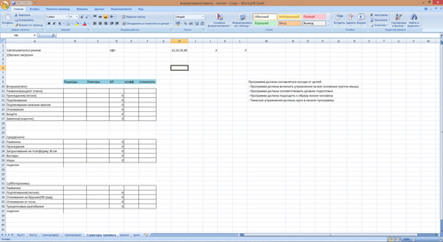
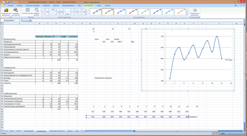

100 Дневный воркаут
<==== Вернуться к оглавлению
День 90. Составление программы тренировок (практика)
Всю эту неделю мы с вами говорили о том, как научиться самостоятельно составлять программы тренировок. Но все наши разговоры носили в большей степени теоретический, нежели практический характер. Пришло время это исправить и сегодня у нас будет практикум по составлению программы тренировок для себя любимых! Скажем спасибо kiss за этот инфо-пост!
Итак, пошаговая инструкция:
Шаг №1: Определитесь с целью тренировок
Условно можно разделить подготовку на ОФП и СФП. Это глобальная цель. Конкретная цель может выражаться в количестве повторений в упражнениях,количестве подходов,времени тренировки итд. Для новичков разумно использовать только офп, для среднего и выше уровня так же обязательна офп и, в зависимости от целей, может включаться сфп.
Шаг №2: Спланируйте режим дня
Для достижения результата необходим комплексный подход.Что касается эффективных тренировок,должны выполняться ряд условий:
а) Запас сил.
На тренировку нужно приходит отдохнувшим и сытым. При отсутствии энергии ваши возможности проделать работу снижаются. Крайние варианты - утром натощак и вечером после тяжелого дня нежелательны. Если режим жизни не позволяет полноценно выкладываться, нужно корректировать цели в меньшую сторону. Так же самую тяжелую тренировку ставить в выходной, проводить тренировки на работе. Когда я работал на складе,т о подтягивался прямо на стеллажах. Каждый час по подходу. И не один я такой был.
б) Спланировать режим питания до начала тренировочного периода.
Обеспечить возможность приема пищи на работе, заранее заготавливая контейнеры. Это крайне важное условие, без которого речи о тренировках быть не может.
в) Обеспечить достаточный отдых и сон.
С этим всё понятно вроде.
Шаг №3. Обозначить структуру тренинга и выбрать упражнения
а) Определить свой уровень.
Исходя из этого выбрать режим тренировок. Для новичков (крайне условно - до 8 подтягиваний) предпочтительна тренировка всего тела за 1 занятие. Таких тренировок 3-5 в неделю. Низкий уровень не позволяет нагрузить как следует 1-2 мышечные группы, поэтому занятия по сплиту нецелесообразны. При среднем уровне можно переходить на сплит систему. При нормальных показателях ,за 1 тренировку удается проработать 2 мышечные группы (или 2-3 упражнения), нагрузить их больше.Такой метод более эффективен. В таком случае восстановление идет дольше и достаточно 2 тренировки в неделю на группу мышц.
б) Выбрать упражнения исходя из целей.
Если речь об офп (а именно этим следует заниматься после 100 дневки), то упражнения преимущественно базовые.Так же необходимо нагружать все мышечные группы равномерно,значит необходимо поддерживать баланс в упражнениях. 2-3 базовых упражнения на группу мышц оптимальный вариант.
Исходя из офп очевидно следствие - все сложные базовые упражнения идут в начале тренировки, ведь именно на них необходимо направить основные силы.
В начале тренировки идет разминка, акцент идет на те суставы, которые будут активно работать. В конце тренировки заминка. Всё как во время 100 дневки.
Иллюстрация к вышесказанному:

(картинка кликабельна)
Шаг №4: Спланировать тренировку на 1 неделю
Распределить нагрузку нужно равномерно на все упражнения и соотнести разные упражнения по сложности для баланса нагрузки. Так же необходимо посчитать общий объем нагрузки за неделю для того, чтобы реализовать прогрессию нагрузки.
Шаг №5: Выполнить программу
Шаг №6: Проанализировать
Сочетание упражнений, время тренировки и остальные параметры. Если все ок, то спланировать тренировки на 2-3 недели.Увеличивать нагрузку по объему линейно или с использованием циклирования (график на скриншоте):

(картинка кликабельна)
BONUS: Конкретный пример составления программы тренировок
======> День 91. Последний день ПРОДВИНУТОГО блока